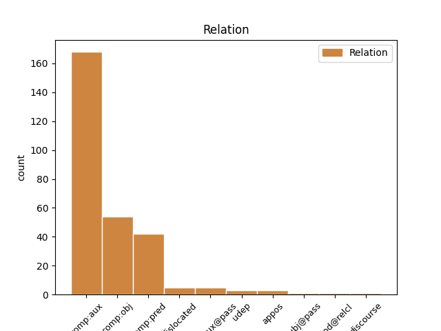
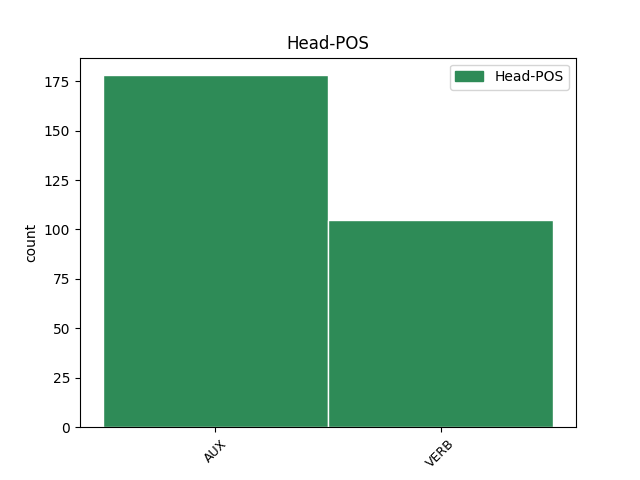
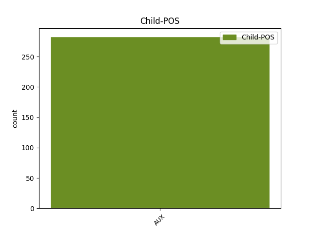

Distribution of features within this leaf



Agreement Rules sorted by frequency.
- When the dependent token is the complement for auxiliary(comp:aux) of the head token, and the dependent token is AUX.
1 I _ _ _ _ 0 _ _ _
2 enjoyed _ _ _ _ 0 _ _ _
3 looking _ _ _ _ 0 _ _ _
4 at _ _ _ _ 0 _ _ _
5 her _ _ _ _ 0 _ _ _
6 in _ _ _ _ 0 _ _ _
7 a _ _ _ _ 0 _ _ _
8 way _ _ _ _ 0 _ _ _
9 that _ _ _ _ 0 _ _ _
10 was _ _ _ _ 0 _ _ _
11 forbidden _ _ _ _ 0 _ _ _
12 to _ _ _ _ 0 _ _ _
13 me _ _ _ _ 0 _ _ _
14 , _ _ _ _ 0 _ _ _
15 this _ _ _ _ 0 _ _ _
16 self _ _ _ _ 0 _ _ _
17 on _ _ _ _ 0 _ _ _
18 self _ _ _ _ 0 _ _ _
19 , _ _ _ _ 0 _ _ _
20 self _ _ _ _ 0 _ _ _
21 as _ _ _ _ 0 _ _ _
22 desirer _ _ _ _ 0 _ _ _
23 and _ _ _ _ 0 _ _ _
24 desired _ _ _ _ 0 _ _ _
25 , _ _ _ _ 0 _ _ _
26 had _ _ _ _ 0 _ _ _
27 a _ _ _ _ 0 _ _ _
28 frankness _ _ _ _ 0 _ _ _
29 to _ _ _ _ 0 _ _ _
30 it _ _ _ _ 0 _ _ _
31 I _ _ _ _ 0 _ _ _
32 had have AUX PAST-AUX Mood=Ind|Tense=Past|VerbForm=Fin 0 _ _ _
33 not _ _ _ _ 0 _ _ _
34 been be AUX PERF Tense=Past|VerbForm=Part 32 comp:aux _ _
35 invited _ _ _ _ 0 _ _ _
36 to _ _ _ _ 0 _ _ _
37 discover _ _ _ _ 0 _ _ _
38 . _ _ _ _ 0 _ _ _
1 My _ _ _ _ 0 _ _ _
2 mother _ _ _ _ 0 _ _ _
3 never _ _ _ _ 0 _ _ _
4 listened _ _ _ _ 0 _ _ _
5 to _ _ _ _ 0 _ _ _
6 what _ _ _ _ 0 _ _ _
7 my _ _ _ _ 0 _ _ _
8 grandmother _ _ _ _ 0 _ _ _
9 read _ _ _ _ 0 _ _ _
10 , _ _ _ _ 0 _ _ _
11 but _ _ _ _ 0 _ _ _
12 she _ _ _ _ 0 _ _ _
13 felt feel VERB PAST Mood=Ind|Tense=Past|VerbForm=Fin 0 _ _ _
14 she _ _ _ _ 0 _ _ _
15 was be AUX PAST Mood=Ind|Number=Sing|Person=1|Tense=Past|VerbForm=Fin 13 comp:obj _ _
16 doing _ _ _ _ 0 _ _ _
17 her _ _ _ _ 0 _ _ _
18 duty _ _ _ _ 0 _ _ _
19 by _ _ _ _ 0 _ _ _
20 her _ _ _ _ 0 _ _ _
21 family _ _ _ _ 0 _ _ _
22 and _ _ _ _ 0 _ _ _
23 by _ _ _ _ 0 _ _ _
24 God _ _ _ _ 0 _ _ _
25 , _ _ _ _ 0 _ _ _
26 and _ _ _ _ 0 _ _ _
27 it _ _ _ _ 0 _ _ _
28 saved _ _ _ _ 0 _ _ _
29 her _ _ _ _ 0 _ _ _
30 the _ _ _ _ 0 _ _ _
31 trouble _ _ _ _ 0 _ _ _
32 of _ _ _ _ 0 _ _ _
33 going _ _ _ _ 0 _ _ _
34 to _ _ _ _ 0 _ _ _
35 church _ _ _ _ 0 _ _ _
36 . _ _ _ _ 0 _ _ _
1 I _ _ _ _ 0 _ _ _
2 thought think VERB PAST Mood=Ind|Tense=Past|VerbForm=Fin 0 _ _ _
3 it _ _ _ _ 0 _ _ _
4 was be AUX PAST Mood=Ind|Number=Sing|Person=1|Tense=Past|VerbForm=Fin 2 comp:pred _ _
5 Errol _ _ _ _ 0 _ _ _
6 's _ _ _ _ 0 _ _ _
7 fault _ _ _ _ 0 _ _ _
8 at _ _ _ _ 0 _ _ _
9 first _ _ _ _ 0 _ _ _
10 – _ _ _ _ 0 _ _ _
1 Yes _ _ _ _ 0 _ _ _
2 , _ _ _ _ 0 _ _ _
3 he _ _ _ _ 0 _ _ _
4 said say VERB PAST Mood=Ind|Tense=Past|VerbForm=Fin 0 _ _ _
5 to _ _ _ _ 0 _ _ _
6 himself _ _ _ _ 0 _ _ _
7 , _ _ _ _ 0 _ _ _
8 it _ _ _ _ 0 _ _ _
9 was be AUX PAST Mood=Ind|Number=Sing|Person=1|Tense=Past|VerbForm=Fin 4 dislocated _ _
10 possible _ _ _ _ 0 _ _ _
11 . _ _ _ _ 0 _ _ _
1 As _ _ _ _ 0 _ _ _
2 Olivia _ _ _ _ 0 _ _ _
3 said _ _ _ _ 0 _ _ _
4 , _ _ _ _ 0 _ _ _
5 it _ _ _ _ 0 _ _ _
6 ought _ _ _ _ 0 _ _ _
7 to _ _ _ _ 0 _ _ _
8 have _ _ _ _ 0 _ _ _
9 been _ _ _ _ 0 _ _ _
10 a _ _ _ _ 0 _ _ _
11 sad-feeling _ _ _ _ 0 _ _ _
12 place _ _ _ _ 0 _ _ _
13 but _ _ _ _ 0 _ _ _
14 it _ _ _ _ 0 _ _ _
15 was be VERB PAST Mood=Ind|Number=Sing|Person=1|Tense=Past|VerbForm=Fin 0 _ _ _
16 n't _ _ _ _ 0 _ _ _
17 ; _ _ _ _ 0 _ _ _
18 there _ _ _ _ 0 _ _ _
19 was be AUX PAST Mood=Ind|Number=Sing|Person=1|Tense=Past|VerbForm=Fin 15 udep _ _
20 instead _ _ _ _ 0 _ _ _
21 a _ _ _ _ 0 _ _ _
22 renewal _ _ _ _ 0 _ _ _
23 : _ _ _ _ 0 _ _ _
24 the _ _ _ _ 0 _ _ _
25 country _ _ _ _ 0 _ _ _
26 had _ _ _ _ 0 _ _ _
27 come _ _ _ _ 0 _ _ _
28 back _ _ _ _ 0 _ _ _
29 , _ _ _ _ 0 _ _ _
30 bringing _ _ _ _ 0 _ _ _
31 the _ _ _ _ 0 _ _ _
32 reassurance _ _ _ _ 0 _ _ _
33 of _ _ _ _ 0 _ _ _
34 stubborn _ _ _ _ 0 _ _ _
35 peace _ _ _ _ 0 _ _ _
36 and _ _ _ _ 0 _ _ _
37 fecundity _ _ _ _ 0 _ _ _
38 , _ _ _ _ 0 _ _ _
39 a _ _ _ _ 0 _ _ _
40 beginning _ _ _ _ 0 _ _ _
41 again _ _ _ _ 0 _ _ _
42 . _ _ _ _ 0 _ _ _
1 Harry _ _ _ _ 0 _ _ _
2 and _ _ _ _ 0 _ _ _
3 Hermione _ _ _ _ 0 _ _ _
4 looked look VERB PAST Mood=Ind|Tense=Past|VerbForm=Fin 0 _ _ _
5 around _ _ _ _ 0 _ _ _
6 : _ _ _ _ 0 _ _ _
7 sprinting _ _ _ _ 0 _ _ _
8 up _ _ _ _ 0 _ _ _
9 the _ _ _ _ 0 _ _ _
10 crowded _ _ _ _ 0 _ _ _
11 street _ _ _ _ 0 _ _ _
12 were be AUX PAST Mood=Ind|Tense=Past|VerbForm=Fin 4 appos _ _
13 Ron _ _ _ _ 0 _ _ _
14 , _ _ _ _ 0 _ _ _
15 Fred _ _ _ _ 0 _ _ _
16 , _ _ _ _ 0 _ _ _
17 George _ _ _ _ 0 _ _ _
18 , _ _ _ _ 0 _ _ _
19 Percy _ _ _ _ 0 _ _ _
20 and _ _ _ _ 0 _ _ _
21 Mr _ _ _ _ 0 _ _ _
22 Weasley _ _ _ _ 0 _ _ _
23 . _ _ _ _ 0 _ _ _
1 It _ _ _ _ 0 _ _ _
2 looked _ _ _ _ 0 _ _ _
3 as _ _ _ _ 0 _ _ _
4 though _ _ _ _ 0 _ _ _
5 it _ _ _ _ 0 _ _ _
6 had _ _ _ _ 0 _ _ _
7 once _ _ _ _ 0 _ _ _
8 been _ _ _ _ 0 _ _ _
9 a _ _ _ _ 0 _ _ _
10 large _ _ _ _ 0 _ _ _
11 stone _ _ _ _ 0 _ _ _
12 pigsty _ _ _ _ 0 _ _ _
13 , _ _ _ _ 0 _ _ _
14 but _ _ _ _ 0 _ _ _
15 extra _ _ _ _ 0 _ _ _
16 rooms _ _ _ _ 0 _ _ _
17 had have AUX PAST-AUX Mood=Ind|Tense=Past|VerbForm=Fin 0 _ _ _
18 been be AUX PERF Tense=Past|VerbForm=Part 17 comp:aux@pass _ _
19 added _ _ _ _ 0 _ _ _
20 here _ _ _ _ 0 _ _ _
21 and _ _ _ _ 0 _ _ _
22 there _ _ _ _ 0 _ _ _
23 until _ _ _ _ 0 _ _ _
24 it _ _ _ _ 0 _ _ _
25 was _ _ _ _ 0 _ _ _
26 several _ _ _ _ 0 _ _ _
27 storeys _ _ _ _ 0 _ _ _
28 high _ _ _ _ 0 _ _ _
29 and _ _ _ _ 0 _ _ _
30 so _ _ _ _ 0 _ _ _
31 crooked _ _ _ _ 0 _ _ _
32 it _ _ _ _ 0 _ _ _
33 looked _ _ _ _ 0 _ _ _
34 as _ _ _ _ 0 _ _ _
35 though _ _ _ _ 0 _ _ _
36 it _ _ _ _ 0 _ _ _
37 was _ _ _ _ 0 _ _ _
38 held _ _ _ _ 0 _ _ _
39 up _ _ _ _ 0 _ _ _
40 by _ _ _ _ 0 _ _ _
41 magic _ _ _ _ 0 _ _ _
42 ( _ _ _ _ 0 _ _ _
43 which _ _ _ _ 0 _ _ _
44 , _ _ _ _ 0 _ _ _
45 Harry _ _ _ _ 0 _ _ _
46 reminded _ _ _ _ 0 _ _ _
47 himself _ _ _ _ 0 _ _ _
48 , _ _ _ _ 0 _ _ _
49 it _ _ _ _ 0 _ _ _
50 probably _ _ _ _ 0 _ _ _
51 was _ _ _ _ 0 _ _ _
52 ) _ _ _ _ 0 _ _ _
53 . _ _ _ _ 0 _ _ _
1 Afterwards _ _ _ _ 0 _ _ _
2 I _ _ _ _ 0 _ _ _
3 took _ _ _ _ 0 _ _ _
4 it _ _ _ _ 0 _ _ _
5 back _ _ _ _ 0 _ _ _
6 when _ _ _ _ 0 _ _ _
7 it _ _ _ _ 0 _ _ _
8 was be AUX PAST-AUX Mood=Ind|Number=Sing|Person=1|Tense=Past|VerbForm=Fin 0 _ _ _
9 borne _ _ _ _ 0 _ _ _
10 in _ _ _ _ 0 _ _ _
11 upon _ _ _ _ 0 _ _ _
12 me _ _ _ _ 0 _ _ _
13 startlingly _ _ _ _ 0 _ _ _
14 with _ _ _ _ 0 _ _ _
15 what _ _ _ _ 0 _ _ _
16 extreme _ _ _ _ 0 _ _ _
17 nicety _ _ _ _ 0 _ _ _
18 he _ _ _ _ 0 _ _ _
19 had have AUX PAST-AUX Mood=Ind|Tense=Past|VerbForm=Fin 8 subj@pass _ _
20 estimated _ _ _ _ 0 _ _ _
21 the _ _ _ _ 0 _ _ _
22 time _ _ _ _ 0 _ _ _
23 requisite _ _ _ _ 0 _ _ _
24 for _ _ _ _ 0 _ _ _
25 the _ _ _ _ 0 _ _ _
26 ' _ _ _ _ 0 _ _ _
27 affair _ _ _ _ 0 _ _ _
28 . _ _ _ _ 0 _ _ _
29 ' _ _ _ _ 0 _ _ _
Disagree Examples:
1 He _ _ _ _ 0 _ _ _
2 's be AUX PRES Mood=Ind|Number=Sing|Person=3|Tense=Pres|VerbForm=Fin 0 _ _ _
3 been be AUX PERF Tense=Past|VerbForm=Part 2 comp:aux _ _
4 waiting _ _ _ _ 0 _ _ _
5 for _ _ _ _ 0 _ _ _
6 you _ _ _ _ 0 _ _ _
7 since _ _ _ _ 0 _ _ _
8 eight _ _ _ _ 0 _ _ _
9 o'clock _ _ _ _ 0 _ _ _
10 . _ _ _ _ 0 _ _ _
1 He _ _ _ _ 0 _ _ _
2 's be AUX PRES Mood=Ind|Number=Sing|Person=3|Tense=Pres|VerbForm=Fin 8 comp:pred _ _
3 been _ _ _ _ 0 _ _ _
4 frantic _ _ _ _ 0 _ _ _
5 , _ _ _ _ 0 _ _ _
6 the _ _ _ _ 0 _ _ _
7 woman _ _ _ _ 0 _ _ _
8 explained explain VERB PAST Mood=Ind|Tense=Past|VerbForm=Fin 0 _ _ _
9 . _ _ _ _ 0 _ _ _
1 He _ _ _ _ 0 _ _ _
2 's be AUX PRES Mood=Ind|Number=Sing|Person=3|Tense=Pres|VerbForm=Fin 0 _ _ _
3 been be AUX PERF Tense=Past|VerbForm=Part 2 comp:aux _ _
4 frantic _ _ _ _ 0 _ _ _
5 , _ _ _ _ 0 _ _ _
6 the _ _ _ _ 0 _ _ _
7 woman _ _ _ _ 0 _ _ _
8 explained _ _ _ _ 0 _ _ _
9 . _ _ _ _ 0 _ _ _
1 He _ _ _ _ 0 _ _ _
2 was _ _ _ _ 0 _ _ _
3 used _ _ _ _ 0 _ _ _
4 to _ _ _ _ 0 _ _ _
5 walking _ _ _ _ 0 _ _ _
6 briskly _ _ _ _ 0 _ _ _
7 , _ _ _ _ 0 _ _ _
8 and _ _ _ _ 0 _ _ _
9 all _ _ _ _ 0 _ _ _
10 this _ _ _ _ 0 _ _ _
11 starting _ _ _ _ 0 _ _ _
12 and _ _ _ _ 0 _ _ _
13 stopping _ _ _ _ 0 _ _ _
14 and _ _ _ _ 0 _ _ _
15 shuffling _ _ _ _ 0 _ _ _
16 began _ _ _ _ 0 _ _ _
17 to _ _ _ _ 0 _ _ _
18 be _ _ _ _ 0 _ _ _
19 a _ _ _ _ 0 _ _ _
20 strain _ _ _ _ 0 _ _ _
21 , _ _ _ _ 0 _ _ _
22 as _ _ _ _ 0 _ _ _
23 though _ _ _ _ 0 _ _ _
24 the _ _ _ _ 0 _ _ _
25 rhythm _ _ _ _ 0 _ _ _
26 of _ _ _ _ 0 _ _ _
27 his _ _ _ _ 0 _ _ _
28 body _ _ _ _ 0 _ _ _
29 was be AUX PAST Mood=Ind|Number=Sing|Person=1|Tense=Past|VerbForm=Fin 0 _ _ _
30 being be AUX ING Tense=Pres|VerbForm=Part 29 comp:aux _ _
31 disrupted _ _ _ _ 0 _ _ _
32 . _ _ _ _ 0 _ _ _
1 To _ _ _ _ 0 _ _ _
2 be _ _ _ _ 0 _ _ _
3 Auster _ _ _ _ 0 _ _ _
4 meant mean VERB PAST Mood=Ind|Tense=Past|VerbForm=Fin 0 _ _ _
5 being be AUX ING Tense=Pres|VerbForm=Part 4 comp:pred _ _
6 a _ _ _ _ 0 _ _ _
7 man _ _ _ _ 0 _ _ _
8 with _ _ _ _ 0 _ _ _
9 no _ _ _ _ 0 _ _ _
10 interior _ _ _ _ 0 _ _ _
11 , _ _ _ _ 0 _ _ _
12 a _ _ _ _ 0 _ _ _
13 man _ _ _ _ 0 _ _ _
14 with _ _ _ _ 0 _ _ _
15 no _ _ _ _ 0 _ _ _
16 thoughts _ _ _ _ 0 _ _ _
17 . _ _ _ _ 0 _ _ _